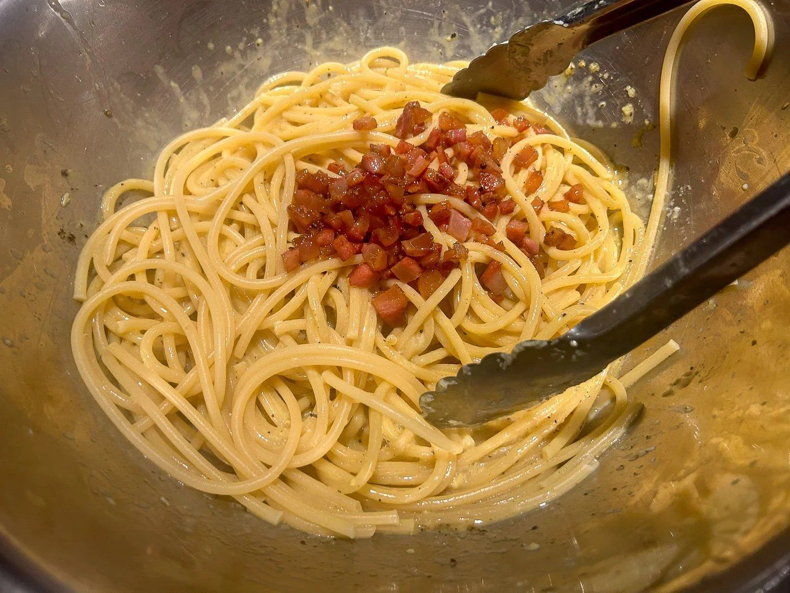
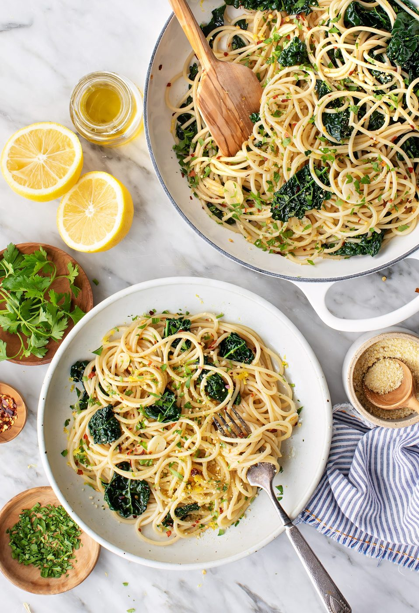

← All collections
Italian Classics
Four-ingredient sauces, blistered crusts, and the rice that wants to be stirred. The cuisine that turned restraint into abundance.

Italian Classics
Authentic Carbonara
Guanciale, egg, pecorino, pepper. No cream. We need to talk about the no cream thing.

Italian Classics
Classic Margherita Pizza
Three ingredients, one blistered crust, zero shortcuts that matter.

Italian Classics
Mushroom Risotto
Twenty minutes of stirring buys you the creamiest rice in the Western canon.

Italian Classics
Spaghetti Aglio e Olio
Garlic, oil, chili, parsley — the midnight pasta of Naples, and proof that pantry cooking can be poetry.